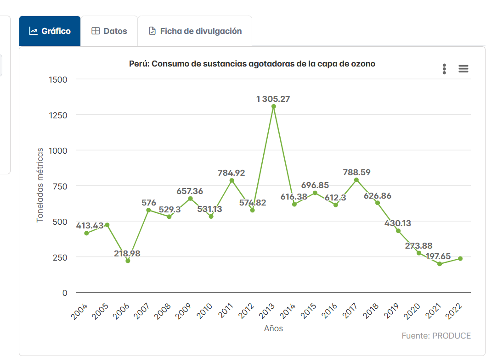

Admin
martes 10 de diciembre
2 Commets
Segun Sinia la Reducción del consumo de sustancias dañinas para la capa de ozono en Perú: Una mirada a los avances entre 2004 y 2022
Este gráfico muestra el consumo de sustancias agotadoras de la capa de ozono en Perú, expresado en toneladas métricas, entre los años 2004 y 2022. Se observa una tendencia variable con picos significativos, como en 2013, donde el consumo alcanzó su máximo histórico de 1,305.27 toneladas métricas. Sin embargo, en años recientes, especialmente desde 2018, el consumo ha disminuido notablemente, llegando a 197.65 toneladas métricas en 2022. Estos datos reflejan los esfuerzos del país por reducir el uso de sustancias dañinas para la capa de ozono. La fuente de esta información es PRODUCE.